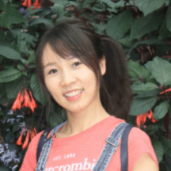

Causality in Vision
CVPR 2021 Workshop, June 19 (8:00 AM), Virtual
News
- 01/2021: Best Paper Prize: The author/team of the best paper will be awarded a US$1,000 (cash) prize.
- 01/2021: Submission Deadline: April 25, 2021 (11:59pm Pacific Standard Time).
- 01/2021: Submission Website: https://cmt3.research.microsoft.com/CIV2021
Introduction
Correlation is not causality. However, this common sense is often surprisingly ignored in most of today’s computer vision systems, including classification, detection, segmentation, and vision-language models, because they are merely trained on correlated sample-label pairs, and the resultant models are nothing short of a likelihood lookup table --- we cannot expect them to generalize to unseen data distribution, not mentioning to more human-level tasks such as modularization, interpretation, and imagination. What is even more regrettable in our community is that we usually blame the poor generalization for insufficient data, and thus some of us may be trapped in the infinite loop: “make a large dataset”---“over-fitted”---“make a larger one’’.
Causality is a new science of data generation, model training, and inference. Only by understanding the data causality, we can remove the spurious bias, disentangle the desired model effects, and modularize reusable features that generalize well. We deeply feel that it is a pressing demand for our CV community to adopt causality and use it as a new mind to re-think the hype of feeding big data into gigantic deep models.
The goal of this workshop is to provide a comprehensive yet accessible overview of existing causality research and to help CV researchers to know why and how to apply causality in their own work. We aim to invite speakers from this area to present their latest works and propose new challenges.
Invited Talks
| Bernhard Schölkopf (MPI / ETH Zürich / Amazon) |
Songchun Zhu (UCLA) |
Susan Athey (Stanford University) |
Max Welling (University of Amsterdam / Qualcomm) |
Schedule
| Time (PST) | Invited speaker | Title | Recording |
|---|---|---|---|
| 8:30 - 8:40 | OC Team | Opening Remarks | |
| 8:40 - 9:10 | Speaker 1 (TBD) | TBD | |
| 9:10 - 9:40 | Speaker 2 (TBD) | TBD | |
| 9:40 - 10:20 | - | Coffee Break and Poster Session | |
| 10:20 - 10:50 | Speaker 3 (TBD) | TBD | |
| 10:50 - 11:20 | Speaker 4 (TBD) | TBD | |
| 11:20 - 11:35 | Oral Speaker 1 | TBD | |
| 11:35 - 11:50 | Oral Speaker 2 | TBD | |
| 11:50 - 12:00 | OC Team | Closing Remarks | |
Organizers
 |
 | ||
| Hanwang Zhang (Nanyang Technological University) | Peng Cui (Tsinghua University) | Kun Zhang (Carnegie Mellon University) | Qianru Sun (Singapore Management University) |
| Mario Fritz (CISPA Helmholtz Center for Information Security) | Kaihua Tang (Nanyang Technological University) | Yulei Niu (Nanyang Technological University) |